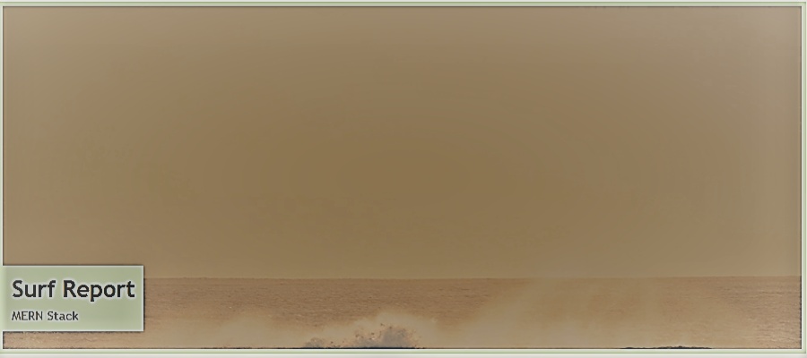
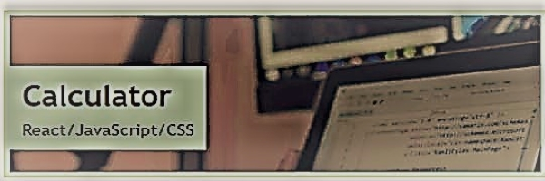
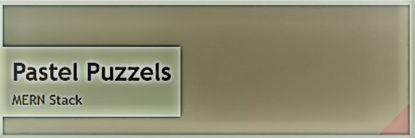
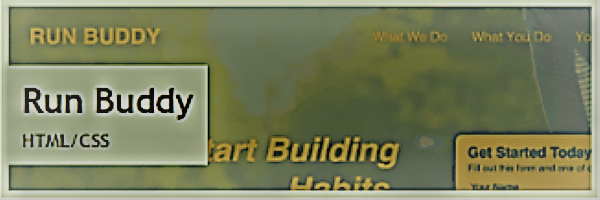

Projects
This is a project in WIP. It is a surf report website that allows users to input their location and get a report of the weather and surf conditions in that area.
This is a project in WIP. It is a calculator website that allows users to input their calculations and get the result.
This is a project in WIP. It is a pastel puzzles website that allows users to input their pastel colors and get the result.
This project is a run buddy website is UCLAx Web dev coding bootcamp first html training mockup project.
this is a project in WIP. It is a led wall website that allows users to input their pastel colors and get the result.
My First UCLAx Bootcamp Project Challenge

My Taskmaster Pro project for UCLAx coding bootcamp